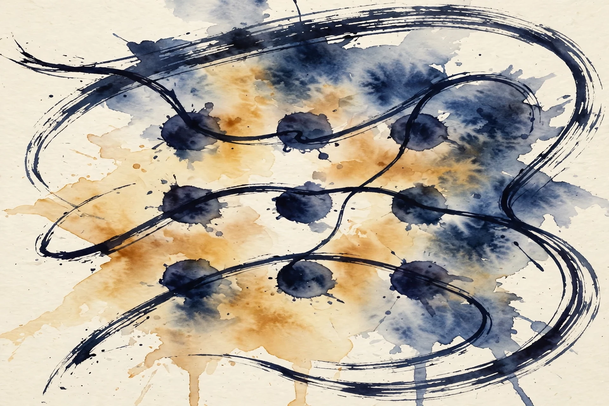

Clearer Thinking with Spencer Greenberg · Episode 10
Rationality and Cognitive Science with Anna Riedl
Spencer Greenberg talks with cognitive scientist Anna Riedl about the great rationality debate, why simple heuristics often win, and wisdom as the route to greater rationality.

Video. The full episode on YouTube.
Two Tribes of Rationality
Source fact The great rationality debate has two main tribes. The axiomatic approach builds on the axioms of rationality of von Neumann and Morgenstern. Follow the axioms and you behave as if you maximize utility. The ecological approach, associated with Gigerenzer, asks instead how well an agent adapts to its environment, without grading that adaptation against axioms.
Source fact The classic axiom is transitivity: if you like A more than B and B more than C, you should like A more than C. A violation looks like a contradiction in your choices. Utility here does not mean happiness. It means a description of the agent's goals as a function over states of the world.
Source fact Underneath sit two attitudes about the gap between humans and the ideal. The meliorist view sees a large gap, the home of biases, that we could close. The Panglossian view sees the best of all possible worlds and a small gap. The debate is not settled history: a 2002 publication by Tetlock and Mellers summarized the 20th-century debate, and a large new exchange appeared only two or three years before this episode.
one cannot be reduced to the other
Anna Riedl · Episode ~00:04
Source fact Riedl's own project is unification. The two sides approach from different ends, but they do not disagree about the facts. They abstract differently from the same phenomena. She calls her stance scientific perspectivism: both sides are powerful tools for discovery, and we need both.
The 1-in-10-Million Test
Source fact The classic base-rate problem. A cancer test is 99% accurate: if you have the cancer, it says so 99% of the time, and if you do not, it clears you 99% of the time. The cancer is rare: one in 10 million people have it. A random person tests positive. Most people's impulse is that the person probably has the cancer.
Source fact The Bayesian answer goes the other way. Out of 10 million screened people, one truly has the cancer and tests positive. But the test errs one time in 100, so roughly 100,000 healthy people also test positive. A positive result is about 100,000 times more likely to be a false alarm than a true one.
Source fact Restate the same facts as natural frequencies, counts of people instead of abstract probabilities, and accuracy jumps. The ecological reading: the frequency format is closer to how information arrives in the real world, so the lab failure overstates the real-world bias.
One true positive against a crowd of false ones
The episode's screening numbers, drawn to scale of the story.
Source: Clearer Thinking, Anna Riedl episode, ~00:07. Bars from the episode's stated figures: 99% accuracy, 1 in 10 million prior. Not to linear scale.
Try it: the base-rate machine
Set the rarity and the test accuracy. Watch the positive result change meaning.
Thinking Has a Price
Source fact The bridge concept is computational rationality. Deciding whether to think longer is itself a decision with a speed-accuracy trade-off. In the real world, computation costs time and carries opportunity costs. The expected value of further thought drops fast, so quick decisions are often boundlessly optimal.
Source fact Falk Lieder's research program, resource-rational analysis, shows that many apparent biases are optimal trade-offs once you price the thinking. Simple strategies also tend to beat complex ones on average because they are more resistant to environmental uncertainty, the same way simple models resist overfitting noise.
Interpretation This reframes the debate as accounting. The axiomatic side prices only the answer. The ecological side prices the thinking too. Add the missing cost and the two ledgers start to agree.
Maybe Not a Fallacy
Source fact Spencer presses the sunk-cost case: people with plenty of time to decide still cling to doomed projects because quitting would feel like wasting past investment, even though the investment is gone either way. Riedl pushes back. We are radically dependent on the structure of our environment and our history. Years invested create real constraints on what comes next, and under deep uncertainty about the payoff, sticking with it can be the reasonable move.
Source fact She does not claim it is never a fallacy. Her claim is narrower: many textbook biases stop looking obvious once you account for embeddedness. The fallacy label assumes a clean separation between past and future that real lives do not have.
Interpretation This is the ecological move applied to a favorite example of the other side. Change the assumed environment from a lab gamble to an uncertain life, and the same behavior changes its grade.
The Card Trick
Source fact The Wason selection task: cards show a shape on each side, and the rule is that a triangle on one side means a square on the other. Most people pick the wrong cards to turn over. Rephrase the identical logical structure as checking IDs to see who may enter a bar, and accuracy jumps dramatically.
Source fact Spencer's moral: a silly lab mistake does not imply a silly real-world mistake. The information is the same, but the realistic framing recruits machinery the abstract framing does not. Riedl agrees in part but stays agnostic about whether human rationality is improvable in general. She notes large individual differences in decision-making, the Stanovich research line, which the axiomatic side takes seriously.
Interpretation The card trick is the debate in miniature. One side sees a logic failure. The other sees a format failure. Both can be right if the failure lives in the interface between mind and presentation.
Wisdom as Meta-Rationality
there cannot really be a theory of fitness
John Vervaeke, via Anna Riedl · Episode ~00:21
Source fact Riedl found her way into wisdom research through John Vervaeke, who describes wisdom as meta-rationality. His argument: fitness changes radically with the environment, so there can be no theory of fitness, only a theory of evolution, natural selection. Likewise there is no fixed list of rationality's properties. There is only the process by which one becomes more rational, and that process is wisdom.
what is true and what to do
Spencer Greenberg · Episode ~00:23
Source fact Spencer offers a compact definition of rationality itself: what is true and what to do. Wisdom, on Vervaeke's view, is the machinery that improves both. It needs self-reflection, and it works by turning seemingly intractable problems into tractable ones through insight. Vervaeke's name for the loop is "overcoming foolishness": make a mistake, reflect, have the aha moment, and do better next time.
Source fact The wise adviser does not just hand over the output of a causal model. She hands over parts of the model, or a process for building your own. Vervaeke also describes expertise as sophisticated procedural knowledge: abstract facts are cheap, but the lived know-how of acting is not, which is why advice lands only after you have made the mistakes yourself.
Draw Outside the Box
Source fact The nine-dot problem: nine dots in a square, strike through all of them. People struggle because they implicitly assume the lines must stay inside the square. Nothing says so. Once you allow lines outside the box, where the phrase comes from, the solution is easy. The constraint was never in the problem. It was in the solver.
Source fact Riedl's life-sized version: flower pots outside a restaurant read as a boundary, so she walked around them, while her friend walked between them. Physically possible, socially marked. The lesson is two-sided. Many constraints are imaginary and worth questioning from first principles. But violating real social norms has real costs, and a wise agent keeps both considerations on the table.
Source fact Two wider points follow. The typical mind fallacy holds that people's inner lives differ far more than we assume. And social copying means behavior is far more uniform than it could be, because everyone copies everyone and incentives punish deviation. Minds vary wildly, actions barely do.
Relevance Realization
Source fact Vervaeke's central problem: relevance realization, deciding what to attend to and what to ignore. Considering every possible action explodes combinatorially, and the brain cannot hold them all. So the mind filters almost everything before consciousness. Relevance is learned in ongoing interaction with the environment, by keeping goals in mind and noticing what actually serves them.
Source fact The chessboard demonstration: 64 squares, 32 dominoes covering two squares each. Remove two diagonally opposite corners. Can 31 dominoes still cover the board? People shuffle pieces in their heads and get lost. The parity insight ends it: each domino covers one white and one black square, but the removed corners share a color, so the board now has 32 of one color and 30 of the other. Impossible, and the same insight generalizes to every such removal.
Why 31 dominoes cannot cover 62 squares
The episode's parity argument, drawn from the stated numbers.
Source: Clearer Thinking, Anna Riedl episode, ~00:36. The 64/32/31 figures are stated in the episode.
Source fact Older models of rationality assume an all-seeing eye: all data arrives, then the agent updates. Real perception is goal-dependent. We see what we need to reach our goals, which is why trained expertise looks like perception: chess masters see strong moves rather than computing them, and the phrase I see means I understand.
Becoming a Cognitive Scientist
Source fact Riedl entered cognitive science overconfident, assuming she already knew the psychology. She learned that interdisciplinarity means breaking your home paradigm. Paul Thagard's book The Cognitive Science of Science gave her the frame: fields advance through conceptual change, the same thing she later watched happen in herself.
Source fact The paradigm tour: behaviorism measured stimulus and response with no model of the organism, Skinner style. Cognitivism opened the box and assumed information processing inside. Then computationalism, connectionism, and embodied dynamism, plus the 4E approach, active, extended, embedded, and embodied cognition. The extended view asks where the mind's boundary lies: a calculator between thought steps is arguably part of the thinking.
Interpretation Her journey mirrors the episode's theme. Each paradigm is a relevance filter, deciding what counts as data. Shifting paradigms is relevance realization at the scale of a career.
The Map of a Field
Source fact Near the end of her master's, Riedl still felt cognitive science did not make sense, so she drew it. The map's x-axis is the last 100 years of history, the rows are disciplines, the bubbles are key publications, and colored blobs mark the paradigms. It hit the front page of Reddit and Hacker News.
Source fact Drawing it was itself an extended-mind trick. Working memory holds maybe seven to ten items, but a diagram holds them all at once, lets the eye move nonlinearly, and makes gaps visible. It also lets experts point at your mistakes: a picture of your understanding is easier to correct than a monologue about it.
Interpretation The map is the episode's ideas made concrete. Externalizing thought is relevance realization with a pen. The diagram does the filtering the brain cannot.
Diagrams That Think
Source fact Riedl is an information-design enthusiast. Her example is Herbert Simon's paper on why a diagram is sometimes worth 10,000 words: a drawing of a mechanical device and a parts list carry the same information, but the drawing lets you imagine pulling the parts and watching it work, while the list forces a costly mental translation first.
Source fact The public-service version comes from Otto and Marie Neurath, who thought governments owed citizens good visual representations so they could vote better. The warning: presentation choices steer conclusions. Diagrams of US inequality disagree depending on small decisions, like how employer-paid health care is counted, so an untrusted designer can sway you without lying.
Source fact The closing loop: perception and understanding are close. Once complex thinking becomes expertise, it turns into direct perception, which is why the chess master answers one when asked how many moves deep he sees.